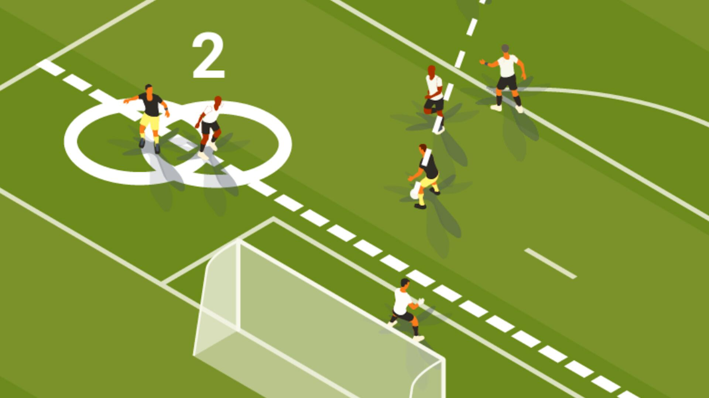

Abseits
Abseits allgemein
Abseits ist eine wichtige Regel im Fußball, die häufig für Verwirrung sorgt, aber eine zentrale Rolle für den Spielverlauf spielt. Ein Spieler befindet sich im Abseits, wenn er sich näher zur gegnerischen Torlinie befindet als der Ball und der vorletzte Abwehrspieler, wenn ihm der Ball zugespielt wird. Dabei ist es entscheidend, dass der Spieler aktiv ins Spielgeschehen eingreift, indem er den Ball spielt oder sich in die Bewegung des Abwehrspielers einmischt.
Ausnahmen der Abseitsregel
- Wenn der Spieler sich in seiner eigenen Hälfte des Spielfelds befindet.
- Wenn ihm der Ball aus einem Eckball, Einwurf oder einem Torschuss zugespielt wird.
Das Ziel der Abseitsregel ist es, zu verhindern, dass ein Spieler sich einfach vor dem Tor aufhält und auf einen langen Ball wartet. Sie sorgt dafür, dass das Spiel fair bleibt und jeder Spieler in einer strategischen Position spielt, ohne das Spiel mit unlauteren Methoden zu verzerren.
